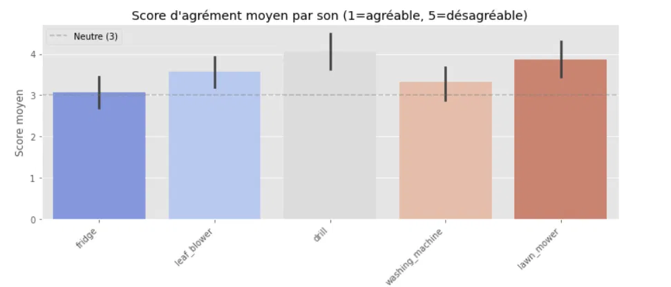
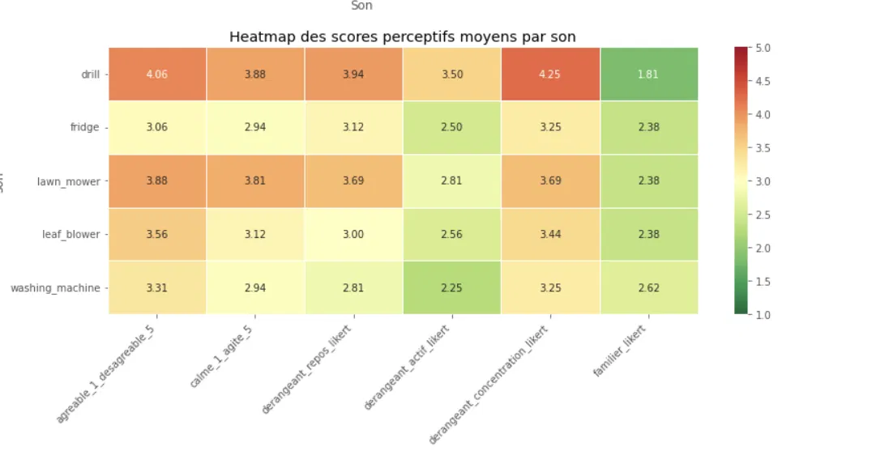
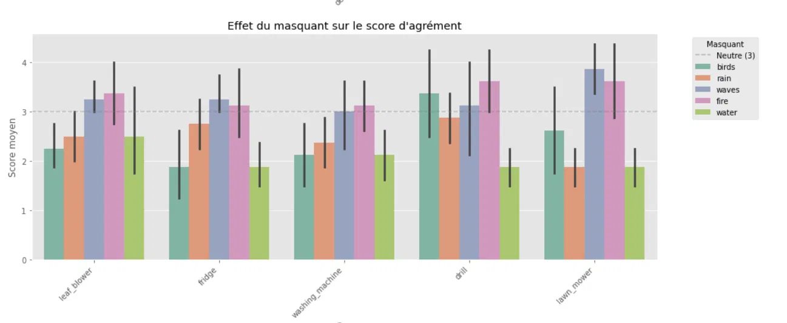
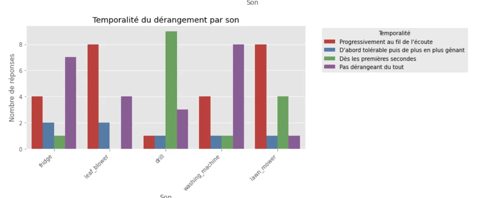
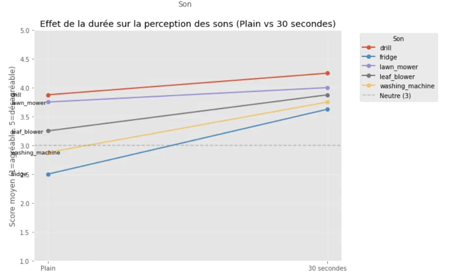
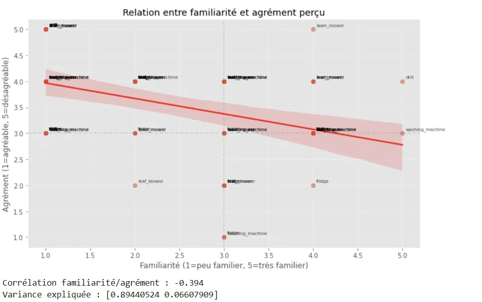
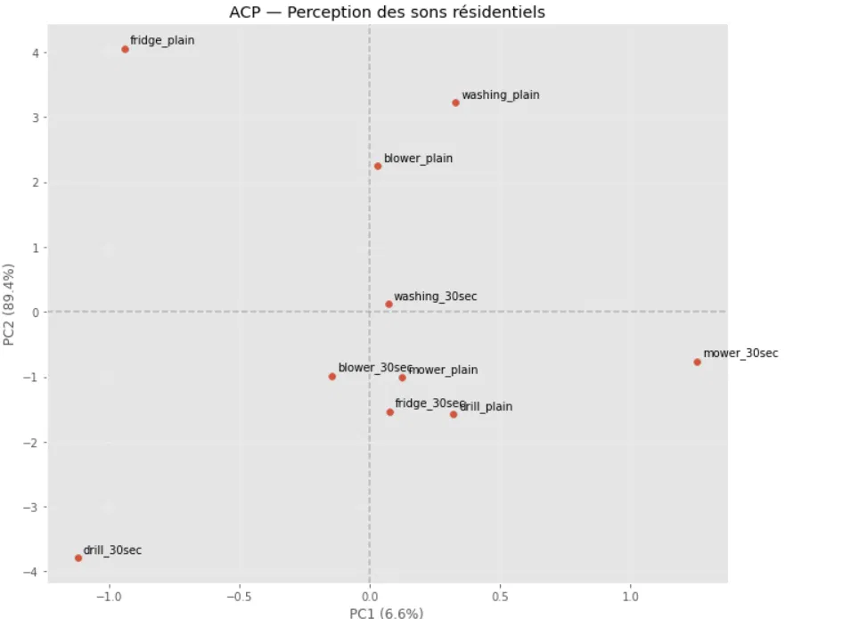
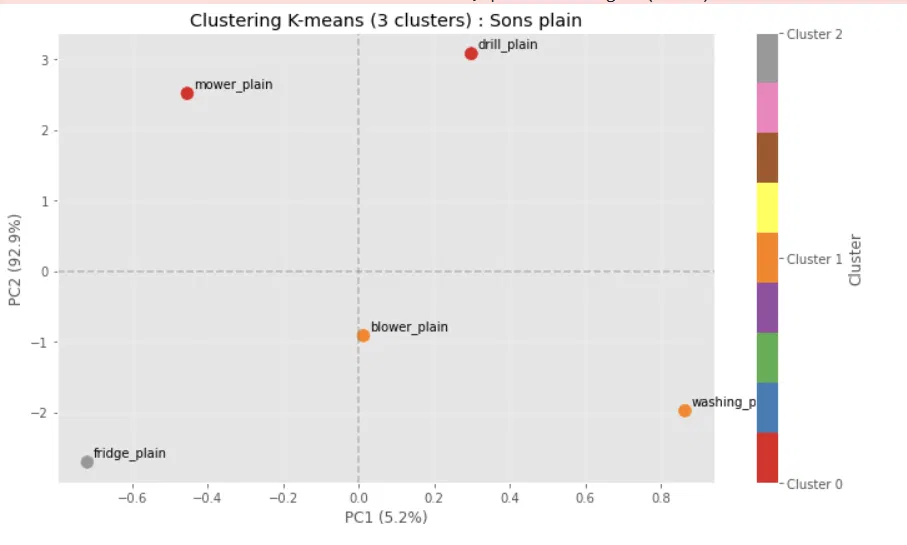

Évaluation¶
Cette page sert à présenter comment le projet a été testé, évalué ou validé.
Elle ne remplace pas le rapport final, mais permet de documenter progressivement les résultats obtenus et leur interprétation.
Structure suggérée¶
La structure suivante est donnée à titre indicatif.
Vous pouvez l’adapter selon la nature du projet.
Méthodes de validation¶
Présentez les approches utilisées pour valider le projet :
- scénarios d’utilisation ;
- tests fonctionnels ;
- tests utilisateurs ;
- mesures de performance ;
- validation expérimentale ;
- comparaison avec des solutions existantes.
Résultats obtenus¶
Pour rappel, les sons étudiés à date sont les suivants : perceuse électrique, machine à laver, réfrigérateur, tondeuse à gazon et souffleuse à feuilles.
Différentes visualisations ont été réalisées à partir des données collectées:
- Un bar plot du score d'agrément par son:

Les résultats indiquent que tous les sons étudiés obtiennent un score d'agrément supérieur à 3 (seuil neutre), ce qui suggère qu'ils sont globalement perçus comme désagréables par les participants. La perceuse (drill) obtient le score le plus élevé (4.06), suivie de la tondeuse à gazon (lawn_mower, 3.88) et de la souffleuse à feuilles (leaf_blower, 3.56). Le réfrigérateur (fridge, 3.06) et la machine à laver (washing_machine, 3.31) présentent les scores les plus bas, suggérant une perception moins négative. Les intervalles de confiance à 95% indiquent une variabilité interindividuelle notable, particulièrement pour la perceuse et la tondeuse.- Un heatmap des scores perceptifs moyens de chaque son:

La heatmap révèle des différences perceptives marquées entre les sons étudiés. La perceuse se distingue nettement avec les scores les plus élevés sur presque tous les attributs, notamment le dérangement à la concentration ( 4.25) et l'agrément ( 4.06). À l'inverse, le réfrigérateur et la machine à laver présentent des profils plus modérés. Un résultat notable concerne la colonne familier_likert : la perceuse obtient le score le plus bas ( 1.81), indiquant qu'elle est peu familière, tandis que la machine à laver est la plus reconnue ( 2.62). Par ailleurs, la colonne derangeant_actif_likert présente systématiquement les scores les plus bas pour tous les sons, confirmant que les participants tolèrent mieux ces sons lorsqu'ils sont actifs que lorsqu'ils sont au repos ou en train de se concentrer.
- barplot des effets des masquants sur les scores d'agrément :

Ce graphique compare l'effet des cinq sons compensateurs sur la perception d'agrément de chaque son résidentiel. Rappelons que plus le score est bas, plus la perception est positive. Pour l'ensemble des sons, les masquants birds et rain produisent systématiquement les scores les plus bas, indiquant qu'ils sont les plus efficaces pour améliorer la perception. Le masquant waves tend à produire des scores plus élevés, suggérant une efficacité moindre voire un effet contre-productif pour certains sons, de même que celui du feu. Les larges intervalles de confiance reflètent une variabilité interindividuelle importante, ce qui souligne la nature subjective de la perception sonore et aussi la limite imputée à l'étude par le manque de participants.
- Temporalité du dérangement par son :

Ce graphique illustre à quel moment les participants ont commencé à percevoir le dérangement pour chaque son. La perceuse se distingue nettement; 9 participants sur 10 ont déclaré la trouver dérangeante dès les premières secondes, ce qui en fait le son le plus immédiatement perturbant. La tondeuse à gazon présente un profil similaire avec 8 réponses "progressivement au fil de l'écoute". Le réfrigérateur se démarque positivement avec 7 réponses "pas dérangeant du tout", confirmant sa position comme son le moins perturbant. La machine à laver présente le profil le plus réparti : 4 réponses "progressivement" et 8 "pas dérangeant du tout" , suggérant une perception très variable selon les individus.
- Effet de la durée sur la perception ( plain (20 secondes) vs 30 secondes):

Ce graphique révèle un résultat frappant : pour tous les sons sans exception, la version de 30 secondes est perçue comme plus désagréable que la version courte (plain). Cela confirme l'existence d'un effet d'accumulation temporelle (annoyance build-up) pour l'ensemble des sons étudiés. Le réfrigérateur présente la pente la plus prononcée : son score passe de 2.5 (plain) à 3.6 (30 secondes), traversant le seuil neutre de 3. Ce résultat est cohérent avec la littérature sur les sons continus et monotones, qui sont particulièrement susceptibles de générer un effet d'accumulation. La perceuse et la tondeuse, déjà perçues comme très négatives en version courte, présentent des pentes plus faibles ; comme s'ils avaient atteint un effet plafond limitant leur dégradation supplémentaire.
- Relation entre la familiarité et l'agrément perçu :

Une corrélation négative modérée (r = -0.394) est observée entre la familiarité et le score de désagrément, suggérant que plus un son est familier, plus il tend à être perçu comme agréable. Cette relation est cohérente avec l'hypothèse d'habituation perceptive ; une exposition répétée à un son réduit progressivement la réponse émotionnelle négative qu'il suscite. Toutefois, cette relation n'est pas systématique : la perceuse constitue une exception notable, demeurant perçue négativement malgré une familiarité relativement élevée pour certains participants. La familiarité n'explique que 15.5% de la variance de l'agrément (r² = 0.155), ce qui indique que d'autres facteurs ( nature du son, contexte, sensibilité individuelle entre autres) jouent également un rôle important.
-
ACP ( en lien avec l'étude d'Axelsson de 2010):

L'analyse en composantes principales révèle que PC2 (89.4%) capture la quasi-totalité de la variance perceptive, ce qui indique que les attributs perceptifs mesurés convergent vers une dimension principale de nuisance globale. Les sons se distribuent de façon cohérente le long de cet axe : drill_30sec et fridge_plain occupent les positions les plus extrêmes, reflétant respectivement la perception la plus négative et la plus positive. PC1 (6.6%) capture une dimension secondaire liée à la familiarité et à l'agitation, distinguant notamment mower_30sec (peu familier et agité) de fridge_plain (familier et calme). La distinction entre les versions plain et 30 secondes est visible : les versions 30 secondes tendent à se positionner vers les zones plus négatives, confirmant l'effet de la durée observé dans le graphique précédent. -
KMEANS :

Le clustering K-means sur les sons plain révèle trois groupes perceptifs distincts. Le cluster 0 (rouge) regroupe drill_plain et mower_plain : les sons perçus comme les plus dérangeants et les moins familiers. Le cluster 1 (orange) comprend blower_plain et washing_plain : des sons modérément négatifs avec une familiarité plus élevée. Le cluster 2 (gris) est composé uniquement de fridge_plain : le son le moins dérangeant et le plus familier, qui se distingue suffisamment des autres pour former sa propre catégorie. Cette taxonomie en trois niveaux de nuisance , élevée, modérée et faible constitue la base du système de correspondance entre sons résidentiels et sons compensateurs développé en Phase 2.
Le nombre de clusters optimal a été identifié à l'aide de la méthode du coude.
Il faut noter que lorsqu'on considère les extraits de 30 secondes, les groupes sont différents : cluster 0 contient mower et fridge, cluster 1 drill seul et cluster 3 blower et washing.
Présentez les principaux résultats :
- fonctionnalités validées ;
- performances observées ;
- résultats de tests ;
- retours utilisateurs ;
- observations importantes.
Analyse critique¶
Discutez des résultats obtenus :
- les objectifs ont-ils été atteints ?
- quels éléments fonctionnent bien ?
- quelles limites ont été observées ?
- quels aspects pourraient être améliorés ?
Limites du projet¶
Présentez les principales limites du projet :
- contraintes techniques ;
- portée limitée ;
- temps disponible ;
- limites des données ou des tests ;
- dépendances externes.